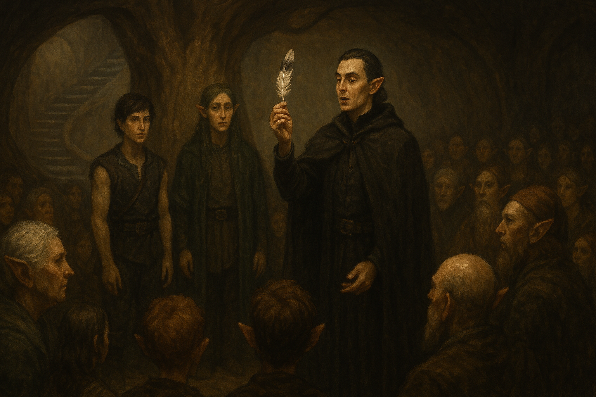

Chapter 4: Trial of the Chosen One
Mattington Shattered

Mattington Shattered
Day 3 in the Feywild
夜裡，被 Siri 驚醒的 Samael 發現 Siri 正在塗鴉大家的臉，成功說服了他讓自己和酷爆不被畫臉。不過此時的他已經睡飽了，因此將酷爆放回帳篷後，便到處繞了繞。
Samael 找到了一個賣樂器的攤位，在嘗試和店家溝通後，他試彈了一把魯特琴，聲音明顯比過去 Indigo 送他的那把還要好。Samael 向店家說了 Indigo 後，店家便跑去將 Indigo 找了過來。得知 Samael 想要買這把琴，Indigo 向店家要了支筆，便在琴上簽了自己的名字，感到十分得意。接著，在 Samael 的要求下，Indigo 給了他一顆寶石，上面似乎有記了一個簽名。Indigo 表示要買東西，用這個給店家感應一下，帳就記在 Indigo 的名下。
「之前有暗影之父，現在有阿嬤支付。」
DM(!?)
接著，Samael 在樂器攤翻了許久，找到了一把神奇的樂器。他曾聽說過 Didgeridoo，但這是他第一次見到，大小比他認知中的小了很多，大概只有不到半身長而已。試吹了一下後，Samael 便決定要買了。帶著兩把新的樂器，Samael 心滿意足地回到了帳篷去。此時除了 Siri 外，大家都睡飽了。大家也沒有多想，便把 Siri 給挖了起來，準備參與今天最重要的事：那場屬於 Midori 和 Beau 的試煉。然而，當大家準備出發時，Samael 卻發現 Ron 不見了。
猶豫著該不該先去把 Ron 找出來，大家最終決定先去找 Elby，Ron 也許先跑去試煉場了也說不定。在居民的帶路下，大家見到站在中心樹邊的 Elby，與平日穿著純白的衣服不同，今天的他，換上了全黑的裝扮。Midori 詢問 Elby 能否先吃個早餐，但 Elby 表示是時候進行試煉了。
在 Elby 的呼喚下，帳篷內的居民們通通向中心樹靠了過來。Elby 念起咒語，突然間，地面開始震動，中心樹陡然向上拔起，露出了一個巨大的樹洞。Elby 帶頭從走入樹洞，居民們也隨後跟上，冒險者們則走在最後。樹洞內是向下盤旋的樓梯，一路降下到帳篷底下巨大的廣場。
踏出樹洞內的樓梯，居民們紛紛繞到廣場的邊緣，把中間留給 Elby 和參與試煉的 Midori 與 Beau。Elby 一面以 Fey 語向居民們宣佈試煉即將開始，一面和 Midori 和 Beau 簡單說明，每次試煉都會有不同人負責主持，且試煉的內容也不一樣。這一次將有五個試煉，考驗兩人的各種能力。
第一項是奉獻試煉，兩人被要求各給予居民們一個屬於他自己的東西。Beau 拿起了小刀，將他的長髮割斷，並將他的頭髮遞給廣場周圍的居民們，最後留下一根，遞給了 Midori。接著，他用普通語，告訴居民們，雖然自己來這裡不久，但是希望自己可以成為這個群體的一部份，就像現在把自己的頭髮送給大家，大家都能保有他的一部份一樣。輪到 Midori，他唱起了名為 True True Friend 的歌，將這首歌獻給居民們，希望能成為大家的朋友。
第二項是感官試煉。Elby 請三名居民各拿一個不透光的箱子來到他的面前，接著，他從自己的口袋內拿出了一根羽毛，潔白色，但中間有幾簇黑色的分岔。Elby 表示這是一根被先祖征服者洛林親吻過的羽毛，請兩人找出這根羽毛被放在三個箱子中的哪一個？接著，他朝空中一拋，再次抓住羽毛時，羽毛便消失了。這回由 Midori 先，他試著去感應，排除了其中一個箱子，隨後再次感知，找到了羽毛所在的箱子。Elby 協助 Midori，將羽毛從箱子內取出。拿著羽毛，Midori 哼起他曾聽過的「洛林精神」，彷彿在居民中，也微微響起一起哼唱的旋律。接著，Beau 坐了下來，閉起雙眼。他的雙手在三個箱子之間遊蕩，過了好幾分鐘，他做好了決定，將手伸入其中一個箱子，從箱子中眾多的羽毛中取出那根被洛林親吻過的羽毛。
第三項是預見試煉。Elby 請兩人透過中心樹，讀取他們所看見妖精荒野的未來，並分享給居民們。Beau 先背對著樹，用雙手觸碰樹皮，並緩慢呼吸。不久後，他站了起來，大聲地朝著居民們，說著自己從中心樹中，讀取到了不管救世主是誰，妖精荒野會繼續繁榮、和平、穩定幾千幾萬年，甚至會將帳篷持續向外擴展，把帳篷外的危險去除。輪到 Midori 時，Midori 將手碰向樹。然而，他只看見在黑暗之中，一個人的身影，那人是 Yuki。穿著簡樸的 Yuki 的口中似乎念著什麼，但 Midori 聽不見。他仔細從 Yuki 的唇語，解讀他的意思。Yuki 告訴 Midori 自己感覺快要消失了，要 Midori 放他自由，只要 Midori 還思念著他，自己就無法自由。Midori 試著想和他對話，但得到的消息都沒什麼幫助。暫時將手移開樹，Midori 再次透過中心樹讀取，畫面中依然只有 Yuki。Yuki 和 Midori 說著再見，然後就消失了。Midori 感到心慌，再次嘗試與中心樹連結。這次，他看見了妖精荒野的大帳篷，有個人從帳篷外竄了進來，隨後，大量的人也竄進了帳篷，然後帳篷內的燭火都被熄滅了。帶頭那人的臉是 Yuki。Midori 和 Elby 說明這件事，並表示自己這樣好像沒有看到妖精荒野的未來，Elby 則表示這樣的資訊對妖精荒野已經很有幫助了。
第四項是決心試煉。Elby 表示這項試煉會請兩人分別攻擊對他們來說最重要的人。Midori 告訴 Elby 自己沒有攜帶任何武器，於是 Elby 便幫他向居民要了一根木棍。這回由 Midori 先，Beau 則先被帶到了樹的另一側。Elby 透過魔法，幻化出了一個人影，是跪在地上的 Yuki。雖然剛剛已透過中心樹看見了 Yuki，Midori 還是在心情上受到很大的影響。Midori 試著和 Yuki 對話，最終依然下不了手，只好請 Elby 將幻象解除。輪到 Beau 時，Midori 被帶到樹的後方。被幻化在 Beau 眼前的是 Midori。Beau 一開始也感到十分震驚，但在認定了這只是個幻象後，Beau 揮出了一拳，幻影也就消失了。
最後一項是力量試煉。Elby 請兩人同時用最大的力氣朝著中心樹攻擊，目標是將中心樹打斷。對於這樣的要求，Midori 感到有些困惑，畢竟中心樹是這裡的骨幹，裡面還乘載了所有人的知識與記憶，這樣的行為十分古怪。Elby 表示不用擔心，這只是試煉的一部份而已。半信半疑之下，Midori 和 Beau 便開始攻擊中心樹。見到中心樹被攻擊，居民們感到慌張與困惑，試圖衝到廣場中心進行阻撓，但 Elby 突然間在樹的周圍設起了一道藍色的屏障，將中心樹、自己、Midori 和 Beau 與其他人區隔開來，同時，自己也開始使用魔法朝著中心樹攻擊。
廣場周圍的群眾全部都繞到屏障周圍了，但是只要身體距離屏障太過接近，就會被彈開來，根本無法介入。Samael 試著尋找 Indigo 阿嬤，並將 Indigo 帶到大家身邊，討論該怎麼做。基於根本無法進到屏障內，大家最終只得到一個結論：先穿越回物質世界，再穿越回到帳篷的上層，從上方進行干預。於是在 Indigo 的帶領下，Samael、YHWH 和 Franz 穿越回了物質世界，留下待在妖精荒野的 Siri 隨時監控著 Midori 和 Beau 的狀況。
回到物質世界，多倫維爾的天氣已經開始熱起來了。Samael 走進之前住過的酒館，向老闆詢問 Dr. White 之前都住在什麼地方。老闆帶著大家，繞到了一座農田旁的小屋，裡面空蕩蕩的，就像不曾有人住過一樣。大家對這個房間檢查了一遍，YHWH 發現床底版似乎有兩個像拉索斯語的印記，請 Franz 幫忙確認。大家才意識到 Elby 很可能一直都是拉索斯教的人。Samael 問起 Indigo 之前聽說曾經在妖精荒野被抓到的拉索斯教信徒，到底是發生了什麼事情？於是 Indigo 便準備開始分享。然而，此時 YHWH 和 Franz 突然對於 Indigo 是誰感到困惑。在 Indigo 的說明下，Samael 才了解到，Fey 以外的生物在回到物質世界後會有記憶消失的現象，因此對在妖精荒野認識的 Indigo 才會完全失憶。Samael 也趕緊簡單和 YHWH 和 Franz 說明 Midori 和 Beau 現在遇到危險了，大家得趕快想好解決辦法，回到妖精荒野拯救他們。
在 Indigo 的說明下，大家了解到妖精荒野曾抓到的拉索斯教徒，似乎來回於兩個世界很多次，將妖精荒野的知識與物品帶給了拉索斯教，但是他被關押在什麼地方還是沒有得到答案。
在 Samael 等人回到物質世界的短短時間內，中心樹已經快要倒了。一瞬間，Elby 將手搭在 Beau 肩上。Midori 見狀，趕緊透過法術，將 Elby 施放的法術轉移到自己身上，兩人與樹外的屏障便消失了，只留下 Beau。原本圍繞在屏障外的居民們紛紛衝向樹邊，試著攀上樹，想爬回地面去。Beau 和 Siri 相聚，Siri 從自己的背包拿出網子，計劃等等將網子向上拋，勾在樹上，讓 Beau 可以藉此爬回地面去。
在一片虛無中，Midori 看見自己和 Elby 兩人懸空飄著，Elby 捲起的袖子上，全是拉索斯的經文。Midori 將 Elby 踩著，試圖用剛剛拿在手上的木棍朝他的臉用力砸下去，準備砸第二下時，他看見 Yuki 的臉出現在他的眼前，但是他還是狠下心，用力砸了下去。而當第三下砸下去時，Elby 已經動也不動了。
好一段時間後，Midori 聽見了遠方傳來的步伐聲。他小心翼翼地跟著步伐的方向平行的走，走了一段時間後，發現步伐聲消失了。Midori 朝著那方向前進，卻失去了方向感。他試著向 Keinra 祈禱，身體便開始漂浮，然後終於停了下來。雖然眼前依然一片漆黑，Midori 似乎摸到了周圍像是簾幕一般的構造。好奇之下，他點起了火把，將火把朝簾幕外伸了出去—
Indigo 試著將大家從物質世界傳送回到妖精荒野，但因為不久前才剛穿越過，體力不夠，因此這個重責大任便落到了 Samael 身上。在極度專注下，Samael 順利的將大家傳送回到了妖精荒野帳篷的上層，但大家卻發現上層的帳篷一片漆黑，Samael 甚至發現周圍有大量不是帳篷內居民的氣息。YHWH 趕緊用魔法將上層的中心樹周圍點起營火，但還是看不太清楚。
Samael 突然看見帳篷外出現了一小道光，一支拿著火把的手從帳篷外伸了出來，然後又縮了回去。基於好奇，YHWH 跑了過去，將帳篷拉開，外面是漆黑的野外。不過，聽見了 YHWH 和 Samael 的說話聲，簾幕另一側的 Midori 鼓起勇氣，走了過來，大家便相聚了。
Samael 透過幻象，將聲音傳遞到帳篷的下方，得知 Siri 的計畫，於是從上方接住了 Siri 的網子，請 Indigo 坐在網子上，固定住網子。帳篷底下，居民們爭先恐後地想爬上網子，Beau 大聲喊著自己是救世主，自己應該先爬，於是便第一個爬上了網子，上方的冒險者則將他拉到了地面上。接著，居民們紛紛爬了上來，大家也在地面上將居民們都拉了上來。最後剩下極少數的居民時，Siri 才爬了上來，他估計這個網子大概下次用一下就會壞了。
當所有居民都被拉了上來後，Midori 和 Indigo 問了一下這裡是否有什麼領導者，但是似乎除了 Elby 外，沒有人有這樣的領導風範，可能他或是 Beau 是現在最能登高一呼的人選了。於是，Midori 請 Indigo 代他翻譯。Midori 和居民們告知 Elby 是拉索斯教的人，他的手臂上刺滿了拉索斯的經文，請大家幫忙確認身邊的夥伴們手上是否有拉索斯的經文。